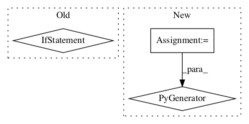

c871784f3eaaab960b6d29ac9b31bb287eb9e588,python/tvm/topi/cuda/dense.py,,dense_cublas,#Any#Any#Any#Any#Any#,34

Before Change
batch, in_dim = data.shape
out_dim, _ = weight.shape
matmul = cublas.matmul(data, weight, False, True)
if isinstance(batch, int):
cfg.add_flop(batch * in_dim * out_dim * 2)
elif isinstance(batch, tir.IntImm):
cfg.add_flop(batch.value * in_dim * out_dim * 2)
// if we get a te.Var, we cannot add flop counts
if bias is not None:
matmul = te.compute(
(batch, out_dim), lambda i, j: matmul[i, j] + bias[j], tag=tag.BROADCAST
)
After Change
batch, in_dim = get_const_tuple(data.shape)
out_dim, _ = get_const_tuple(weight.shape)
matmul = cublas.matmul(data, weight, False, True)
if all(isinstance(d, int) for d in [batch, in_dim, out_dim]):
cfg.add_flop(batch * in_dim * out_dim * 2)
if bias is not None:
matmul = te.compute(
In pattern: SUPERPATTERN
Frequency: 3
Non-data size: 3
Instances
Project Name: apache/incubator-tvm
Commit Name: c871784f3eaaab960b6d29ac9b31bb287eb9e588
Time:
Author: null
File Name: python/tvm/topi/cuda/dense.py
Class Name:
Method Name: dense_cublas
Project Name: stellargraph/stellargraph
Commit Name: bcf6d0a188ee9ba868c1de01c347f813e3aaa35c
Time:
Author: null
File Name: stellargraph/core/graph_networkx.py
Class Name: NetworkXStellarGraph
Method Name: nodes_of_type
Project Name: tensorflow/transform
Commit Name: 54e07bdb2ba299fd6f364289510612f2fe6af8ff
Time:
Author: null
File Name: tensorflow_transform/nodes.py
Class Name: Traverser
Method Name: _visit_operation